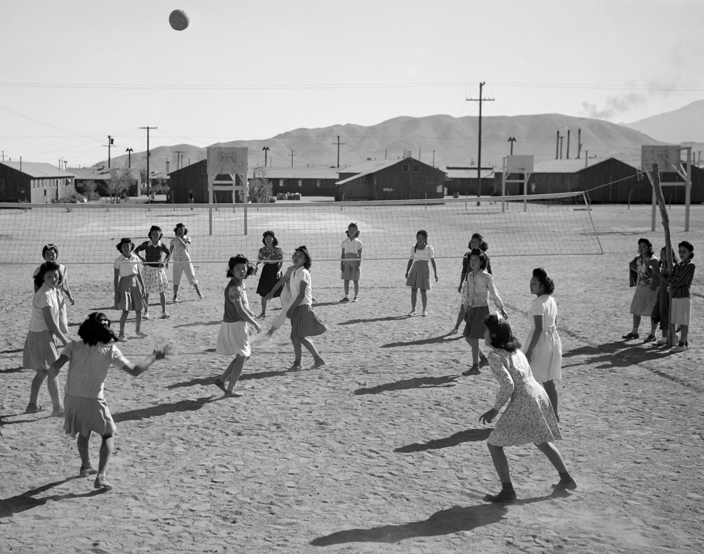

History
- Origins
- Refinements and later developments
Origins
In December 1895, in Holyoke, Massachusetts (United States), William G. Morgan, a YMCA physical director, created a new game called Mintonette, a name derived from the game of badminton, as a past-time to be played indoors and by any number of players. The game took some of its characteristics from other sports such as baseball, and handball. Another indoor sport, basketball, was catching on in the area, having been invented just ten miles away in the city of Springfield, Massachusetts, only four years before. Mintonette was designed to be less rough than basketball, for older members of the YMCA, while still requiring a bit of athletic effort.
The first rules, written down by William G. Morgan, called for a net 6 ft 6 in high, a 25 ft × 50 ft court, and any number of players. A match was composed of nine innings with three serves for each team in each inning, and no limit to the number of contacts for each team before sending the ball to the opponents' court. In case of a serving error, a second try was allowed. Hitting the ball into the net was considered a foul (with loss of the point or a side-out)—except in the case of the first-try serve.
After an observer, Alfred Halstead, noticed the volleying nature of the game at its first exhibition match in 1896, played at the International YMCA Training School (now called Springfield College), the game quickly became known as volleyball (it was originally spelled as two words: "volley ball"). Volleyball rules were slightly modified by the International YMCA Training School and the game spread around the country to various YMCAs.
In the early 1900s Spalding, through its publishing company American Sports Publishing Company, produced books with complete instruction and rules for the sport.
Refinements and later developments
The first official ball used in volleyball is disputed; some sources say Spalding created the first official ball in 1896, while others claim it was created in 1900. The rules evolved over time: in 1916, in the Philippines, the skill and power of the set and spike had been introduced, and four years later a "three hits" rule and a rule against hitting from the back row were established. In 1917, the game was changed from requiring 21 points to win to a smaller 15 points to win. In 1919, about 16,000 volleyballs were distributed by the American Expeditionary Forces to their troops and allies, which sparked the growth of volleyball in new country.
The first country outside the United States to adopt volleyball was Canada in 1900. An international federation, the Fédération Internationale de Volleyball (FIVB), was founded in 1947, and the first World Championships were held in 1949 for men and 1952 for women. The sport is now popular in Brazil, in Europe, in Russia, and in other countries including China and the rest of Asia, as well as in the United States
Beach volleyball, a variation of the game played on sand and with only two players per team, became a FIVB-endorsed variation in 1987 and was added to the Olympic program at the 1996 Summer Olympics. Volleyball is also a sport at the Paralympics managed by the World Organization Volleyball for Disabled.